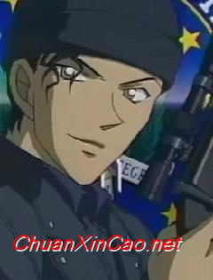

- 引爆摩天轮
- 第十四个目标
- 世纪末的魔术师
- 瞳孔中的暗杀者
- 通往天国的倒计时
- 贝克街的亡灵
- 银翼的魔术师
- 水平线上的阴谋
- 侦探们的镇魂歌
- 绀碧之棺
- 战栗的乐谱
- 漆黑的追踪者
- 天空中的遇难者
- 沉默的15分钟
- 第十一名前锋
- 异次元的狙击手
- 业火的向日葵
- 唐红的恋歌
- 江户川柯南，真实身份为高中生侦探工藤新一，人称“平成年代的福尔摩斯”，“日本警察的救世主”，他因为试图跟踪黑衣组织成员而被偷袭，并被灌下代号APTX-4869的毒药，虽然幸免于死，但身体就此缩小成一年级小学生的模样。
- 毛利兰，帝丹高中二年级B班学生，毛利小五郎的女儿，帝丹高中空手道社的主将。毛利侦探事务所的女主人，新一青梅竹马的女友。将柯南像弟弟一样对待。
- 服部平次，大阪的高中生侦探，与工藤新一齐名，二人合称“关东的工藤，关西的服部”。特征是黑色皮肤，说话带有关西腔。在某起案件中得知柯南的真实身份，并多次协助柯南。擅长剑道。
- 黑羽快斗，《魔术快斗》的主人公，高中二年级学生，第二代怪盗基德，为了探查杀害父亲盗一的组织消息，一直在找寻神秘之石“潘多拉”。
- 白马探，《魔术快斗》中的主要角色和《名侦探柯南》中的客串角色。英国留学生，高中生侦探，第二代怪盗基德（黑羽快斗）的主要对手之一，快斗的同班同学。父亲是警视厅警视总监。因追查职业杀手“蜘蛛”而回到日本并注意到基德，通过资料检索得知黑羽快斗就是怪盗基德，但是快斗始终不承认。希望在公正的情况下与基德一决胜负，并且希望在亲手逮捕基德之前基德不输给任何人。
- 赤井秀一， FBI搜查官。枪法极高，头脑冷静，被黑衣组织称为银色子弹。曾经进入黑衣组织卧底，并成为了阶级很高的干部，代号Rye，在此期间与宫野明美交往。被水无怜奈枪击，后证明未死并以冲矢昴的身份活动。

- 降谷零，表面职业为私家侦探、餐厅服务生，在毛利侦探事务所楼下的波洛咖啡厅打工，并拜毛利小五郎为师。擅长搜集情报，有极强的观察力与推理能力。真实身份为在黑衣组织卧底的公安，代号“波本”。